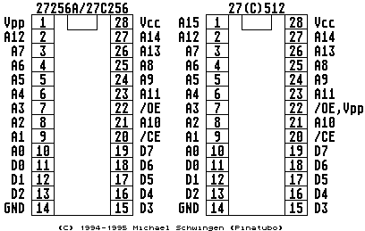

Bei verschiedenen Platinenausf・rungen (520ST, 1040ST, MegaST) kann
man sich unter umst舅den einen haufen Arbeit mit dem L�tkolben sparen.
Diese Computer sind ab Werk vorbereitet entweder 2 oder 6 Epromchips
mit dem Betriebssystem aufzunehmen (erkennbar an den L�tpunkten
CE - 256K/1M, A16 - 256K/1M und A17 - 256K/1M (Revision I beim 520STM)!
Jumper Tabelle f・ die Platine des 520STM (Revision I)
ROM A17 A16 W4 U64 (74LS11)
256K 1-2 1-2 verbunden entfernt
1M * 2 2-3 2-3 offen eingesetzt
1M * 6 2-3 2-3 verbunden entfernt
512K 1-2 Pin 2 ent- verbunden entfernt
weder auf
+5V oder
Ground legen
Jumper Tabelle f・ die Platine des 1040STF(M)
ROM A17 A16 W4 Uxx (74LS11)
256K 1-2 1-2 verbunden entfernt
1M * 2 2-3 2-3 offen eingesetzt
1M * 6 2-3 2-3 verbunden entfernt
512K 1-2 Pin 2 ent- verbunden entfernt
weder auf
+5V oder
Ground legen
Jumper Tabelle f・ die Platine des MegaST
ROM W2 W3 W4 U12 (74LS11)
256K 1-2 1-2 verbunden entfernt
1M * 2 2-3 2-3 offen eingesetzt
1M * 6 2-3 2-3 verbunden entfernt
512K 1-2 Pin 2 ent- verbunden entfernt
weder auf
+5V oder
Ground legen


Kapitel TOS-Umschaltung im 260/520/1040/MegaST Computer, Seite 2